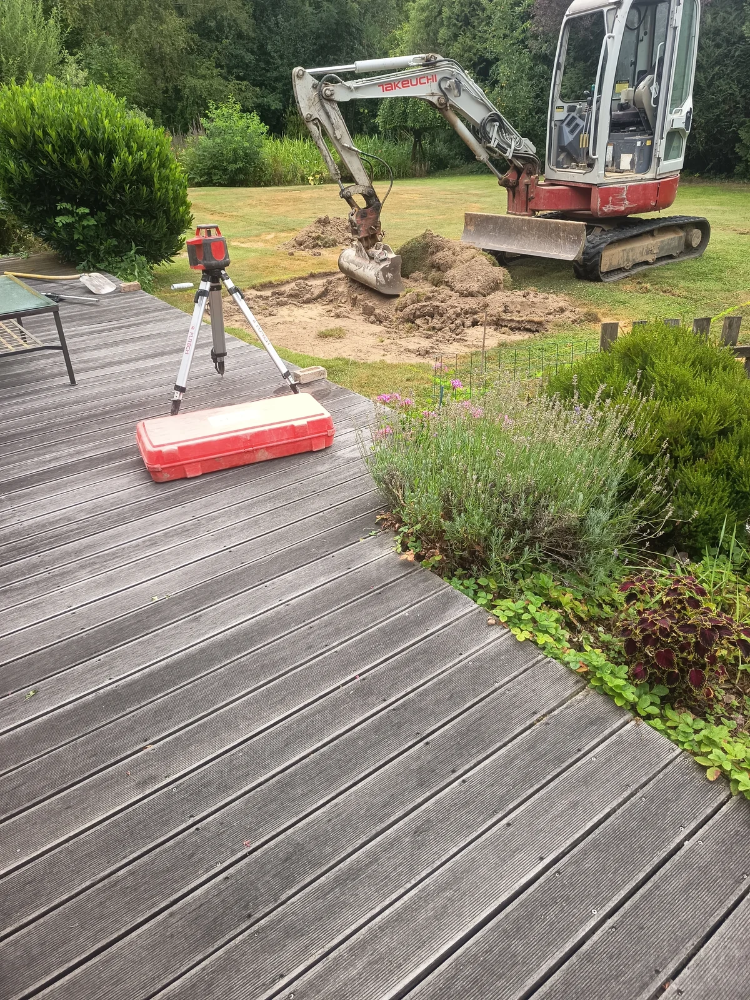

Dimensions et implantation
La place disponible, les niveaux et les usages attendus déterminent la forme du projet.
Piscine béton · Sur étude personnalisée
Une piscine dont les dimensions, l’implantation et les finitions sont étudiées avec votre terrain. LC Création peut prendre en charge le bassin et les aménagements autour.
Le prix est établi après définition du projet et des contraintes de chantier.
Étude sur mesure
Votre terrain. Vos dimensions. Votre projet.La conception
La place disponible, les niveaux et les usages attendus déterminent la forme du projet.
Les choix de confort sont étudiés ensemble, avec leurs contraintes et leur incidence sur le budget.
Margelles, circulations, accès et paysage prolongent les lignes du bassin.
La réalité du chantier
Avant de chiffrer, il faut comprendre comment réaliser votre projet sur place.
Les adaptations et les prestations sont détaillées dans l’offre.

Équipement et utilisation
Les équipements et leur implantation sont dimensionnés pour le bassin et son usage.
Le choix du chauffage et du volet fait partie de l’étude de confort et du devis.
Escalier, revêtement et margelles sont choisis avec l’ensemble de votre extérieur.
Une étude adaptée
Le formulaire recueille les dimensions souhaitées, le terrain et votre enveloppe. Il ne calcule pas un prix définitif de piscine béton : nous préparons une proposition à partir de ces informations.
Présenter ma piscine bétonPour comparer
Nous vous aidons à comparer les solutions à partir des mêmes dimensions, équipements et travaux, pour comprendre le périmètre de chaque proposition.
Comparer les deux solutionsLC Création · Grez-Doiceau et Brabant wallon
Décrivez votre jardin et vos envies. Nous précisons la piscine, ses abords et les contraintes de réalisation.